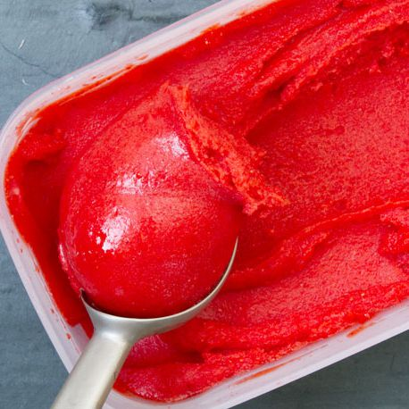

2-Ingredient Strawberry Sorbet

This is a classic 2-Ingredient Strawberry Sorbet. Theres not much to be said about this one for
its pretty self-explanatory and me needing to explain this item any longer would result in the
proof that you are in fact slow my guy. GG
INGREDIENTS
- 2 cups frozen strawberrues
- 1/4 cup sweetened condensed milk
STEPS
- Put strawberries and Condensed milk in a high-powered blender. Blend.
Stopping occasionally to scrape down the sides of the blender with a spatula until
completey smooth.
- Transfer into a freezer container and freeze for 2 hours.